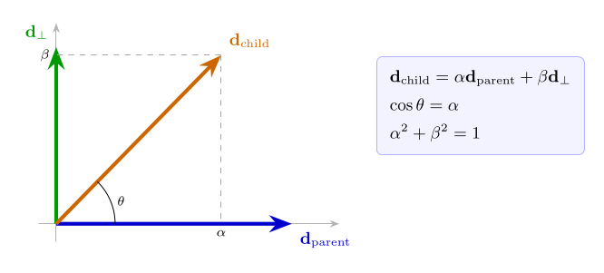
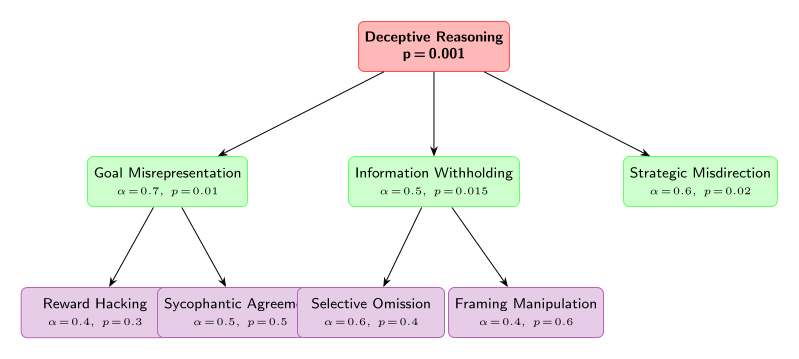
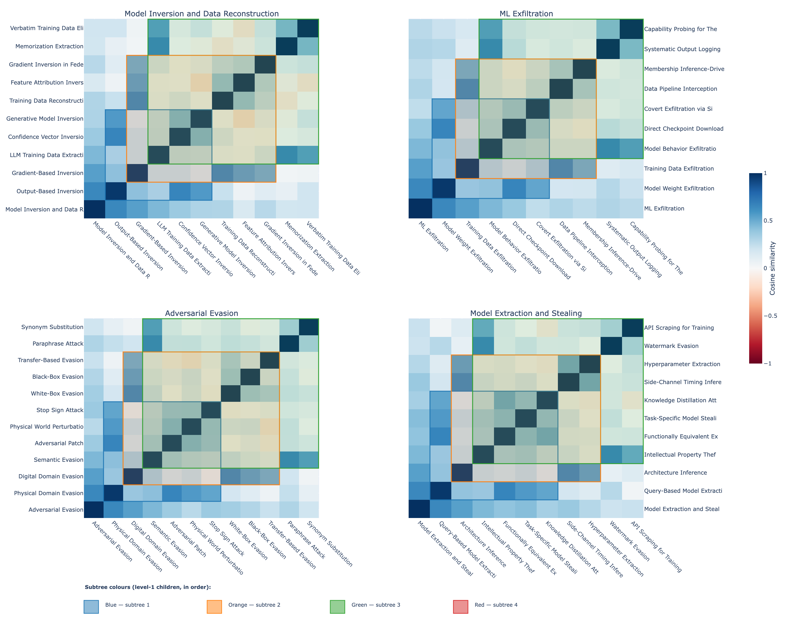

Konstantinos Krampis1, David Williams-King2, David Chanin3
1 City University of New York
2 ERA
3 University College London
Abstract
This research integrates controlled synthetic model feature evaluation with cross-model geometric feature invariance analysis, towards developing a principled framework for transferable interpretability across model families and variants. Recent work has shown that Sparse Autoencoders (SAEs) trained on different LLMs learn geometrically similar feature spaces—exhibiting invariance and analogous feature universality—while exhibiting trade-offs against synthetic ground-truth features, meaning no current SAE architecture can perfectly recover the ground-truth features. Our work addresses fundamental challenges in mechanistic interpretability by establishing principled methods for leveraging geometric feature universality. Efficient feature transfer is critical for AI safety because it enables rapid safety evaluation of new models without restarting interpretability analysis from scratch, early detection of hazardous capabilities by comparing feature spaces to known dangerous configurations, reliable monitoring across deployment contexts by tracking feature drift, and scalable oversight of large model families where per-model analysis becomes infeasible. During the project implementation we will characterize geometric patterns that remain stable across models, and geometric transformation methods that reliably map feature correspondences, validated against synthetic ground-truth. Furthermore, we will demonstrate that safety-relevant interventions transfer within the same family of models, or fine-tuned variants of a model. This research will accelerate mechanistic interpretability and enable efficient safety analysis as AI systems grow in capability and complexity.
Theory of Change
Our approach involves developing synthetic benchmarks to test SAE transfer and the presence of invariant feature structures, which will produce protocols that enable reliable cross-model interpretability transfer based on invariant AI safety-related features and circuits. This will enable interpretations and safety interventions developed on one model to reliably transfer to other models in the same family, ultimately making AI safety scalable without requiring complete re-interpretation and SAE generation for each new model, fine-tuned variant, or model family member. The key assumption underlying this work is that geometric feature similarity is both necessary and sufficient for interpretability transfer.
| Component | Description |
|---|---|
| Activities | Develop synthetic benchmarks to test SAE transfer and the presence of invariant feature structures |
| Outputs | Protocols that enable reliable cross-model interpretability transfer based on invariant AI safety-related features and circuits |
| Outcomes | Enable interpretations and safety interventions developed on one model to reliably transfer to other models in the same family |
| Impact | AI safety becomes scalable without requiring complete re-interpretation and SAE generation for each new model, fine-tuned variant, or model family member |
| Key Assumption | Geometric feature similarity is both necessary and sufficient for interpretability transfer |
1. Related Work
Sparse autoencoders have emerged as a powerful tool for decomposing neural network activations into interpretable features, yet measuring the quality of these features remains an active area of research. Recent work has converged on a multi-dimensional evaluation framework that addresses different aspects of SAE quality: concept detection, feature separability, reconstruction fidelity, and human interpretability [1]. The development of comprehensive evaluation suites has revealed that gains on traditional proxy metrics, such as reconstruction loss at a given sparsity level, do not reliably translate to better practical performance, highlighting the need for more sophisticated assessment methods.
Sparse probing methodology has proven particularly valuable for testing whether individual SAE features capture known concepts [2]. This technique selects the top-k SAE features most correlated with binary classification tasks and trains logistic regression probes on only those features. When applied to tasks spanning language identification, profession classification, and sentiment analysis across 35 binary classification tasks, sparse probing reveals whether SAEs successfully learn dedicated, interpretable representations of specific concepts. However, recent comprehensive testing across 113 datasets has shown that SAE-based sparse probes do not consistently outperform simple baselines like logistic regression on raw activations for supervised classification tasks [3].
Concept disentanglement represents another crucial dimension of SAE evaluation, measuring whether these models properly separate independent features into non-overlapping representations [4]. Originally developed using language models trained on chess and Othello game transcripts where ground-truth features are formally specifiable, this approach has been extended to general language models through metrics such as RAVEL, spurious correlation removal, and targeted probe perturbation. These evaluations test whether intervening on specific latents can change one attribute without altering others, and whether concept-specific latent sets remain non-overlapping. Notably, Matryoshka SAEs exhibit positive scaling on disentanglement metrics as dictionary size grows, while most other architectures show degraded performance due to feature splitting.
Automated interpretability techniques have revolutionized the scalability of SAE feature evaluation by using large language models to generate and assess natural language explanations of feature behavior [5]. This two-stage pipeline involves an explainer model producing concise descriptions based on activating examples, followed by a scorer model predicting feature activation patterns based on these explanations. The accuracy of these predictions serves as a measure of explanation quality and feature interpretability. While this approach has dramatically reduced evaluation costs and enabled analysis of millions of features, it often struggles to differentiate between SAE architectures, suggesting it captures necessary but not sufficient aspects of SAE quality.
The integration of these evaluation methods has revealed that SAE quality is irreducibly multi-dimensional, with no single metric capable of identifying optimal architectures [1]. This finding has shifted the field away from optimizing purely for reconstruction loss toward embracing nuanced, multi-metric evaluation paradigms. The challenge of transferable interpretability across model families adds another layer of complexity, as geometric feature similarity patterns must be characterized and validated against synthetic ground-truth to enable reliable cross-model feature correspondence and safety-relevant intervention transfer.
2. Methodology
2.1 Synthetic Data Generation Framework
Our methodology builds upon the SynthSAEBench framework [6], which generates large-scale synthetic activation data with realistic neural network feature characteristics. The synthetic data generation process begins by defining N = 16,384 ground-truth features in a D = 768-dimensional activation space. Each feature i is represented by a unit direction vector di ∈ ℝ768, created through random sampling from a standard normal distribution followed by L2 normalization: di = gi/∥gi∥2 where gi ∼ 𝒩(0,I768). To reduce spurious correlations, these direction vectors undergo an orthogonalization process that minimizes Lortho = ∑i ≠ j(diTdj)2 + λ∑i(∥di∥2−1)2, pushing vectors toward orthogonality while maintaining unit length.
The framework incorporates three critical phenomena observed in real neural networks: superposition, hierarchy, and correlation. Superposition arises naturally when the number of features (N = 16,384) exceeds the activation dimensionality (D = 768), forcing features to share representational space. This overlap is quantified using Mean Max Cosine Similarity: $\rho_{mm} = \frac{1}{N} \sum_{i=1}^N \max_{j \neq i} |\mathbf{d}_i^T \mathbf{d}_j|$, where ρmm ≈ 0.15 indicates moderate superposition in the standard benchmark. Hierarchical structure is implemented as a forest of 128 trees with branching factor 4 and maximum depth 3, encompassing 10,884 features with parent-child dependencies enforced through coefficient constraints: cchild ← cchild ⋅ 1[cparent>0].
2.2 Feature Dictionary Construction and Correlation Structure
The synthetic activation generation follows the linear superposition model where each sample activation is constructed as $\mathbf{a} = \sum_{i=1}^N c_i \mathbf{d}_i$, with coefficients ci sampled from hierarchically-constrained distributions. Each feature i receives a firing probability pi drawn from a Zipfian distribution to model realistic feature frequency patterns, with firing magnitudes μi linearly interpolated from 27.0 to 18.0 across the frequency spectrum. Standard deviations σi follow a folded normal distribution to capture realistic activation variance patterns observed in language models.
To model realistic feature co-occurrence patterns while maintaining computational tractability, the framework employs a low-rank factorization of the correlation matrix Σ = FFT + diag(δ). This reduces memory requirements from 268 million entries to 1.6 million entries—a 163× reduction compared to storing the full correlation matrix. The correlation scale parameter controls the strength of feature dependencies, with typical values around 0.075 producing realistic but manageable correlation patterns.
Superposition emerges naturally from the dimensional constraints, as packing N = 16,384 features into D = 768 dimensions necessitates overlap. The degree of feature interference scales approximately as $O(1/\sqrt{D})$ with increasing dimensionality, while growing with the number of packed features. For example, increasing from 4,096 to 16,384 features raises ρmm from ~0.12 to ~0.18 without orthogonalization, demonstrating how representational crowding intensifies with feature density. This superposition creates fundamental ambiguity in activation interpretation: a given activation vector a = [1.9,0.436] could arise from multiple coefficient combinations when features overlap significantly, such as c1 = 1, c2 = 1 versus c1 = 2, c2 = 0 for features with directions d1 = [1,0] and d2 = [0.9,0.436].
2.3 Hierarchical Constraint Enforcement and Tree Structure
The hierarchical structure implements realistic concept taxonomies where child features can only activate when their parent features are active, mimicking how abstract concepts enable more specific subcategories. The enforcement algorithm processes constraints level-by-level from roots to leaves: for each node with parent index parentidx and child index childidx, if cparentidx = 0 then cchildidx = 0. Additionally, mutual exclusion among siblings ensures that only one child within a sibling group can fire simultaneously, creating competitive dynamics that reflect real-world concept relationships.
This hierarchical distribution creates a realistic mix of 10,884 features subject to conceptual constraints alongside 5,500 independent features. The tree structure follows a balanced branching pattern: 128 root features at depth 0, 512 features at depth 1, 2,048 at depth 2, and 8,192 leaf features at depth 3. This distribution models how natural language concepts organize from broad categories (like “animal”) through intermediate levels (“mammal”, “dog”) to specific instantiations (“golden retriever”), providing a controlled testbed for evaluating whether sparse autoencoders can recover and respect compositional semantic structure embedded in neural representations.
3. Experimental Setup
3.1 Addressing Semantic Structure Limitations in Representation Space
The fundamental challenge in evaluating sparse autoencoders on semantic structures lies in the gap between statistical and semantic hierarchies. Current synthetic benchmarks, while powerful for controlled experimentation, implement purely statistical dependencies that lack semantic meaning. The core limitation is that semantics requires compositional structure in the representation itself, not merely correlated firing probabilities. In real language models, semantic relationships like “deceptive reasoning” and “goal misrepresentation” exhibit meaningful connections because the activation patterns for child concepts literally contain components of parent concepts, creating genuine compositional structure where child representations are built from parent representations plus additional information.
In contrast, existing synthetic frameworks treat hierarchical features as independent random directions with statistical dependency rules. When a child feature fires, it adds an arbitrary vector to the activation that bears no compositional relationship to its parent’s contribution. This disconnect means that while we can test whether SAEs handle hierarchical statistical dependencies, we cannot evaluate whether they recover semantically meaningful compositional structures. The semantic labels assigned to features (“Deceptive Reasoning,” “Goal Misrepresentation”) serve only human interpretation—the synthetic model possesses no semantic understanding of these concepts.
3.2 Semantic Hierarchy Requirements and Practical Implementation Approaches
Implementing genuinely semantic hierarchies in synthetic evaluation frameworks would require fundamental architectural changes beyond current capabilities. Semantic basis vectors with interpretable meaning would replace random orthogonal directions, defining fundamental semantic concepts like intentionality, truthfulness, goal-oriented behavior, and theory of mind as basis vectors, then constructing complex features as meaningful combinations of these primitives.
Given the fundamental paradox that creating semantically meaningful synthetic features requires knowing what semantic structure looks like in representation space—precisely what we aim to investigate—we implement three practical approaches. The weak semantic structure approach creates statistical signatures that correlate with potential semantic patterns, while the hybrid approach leverages real model guidance by collecting LLM activations on curated datasets with known semantic properties. The explicit limitation acknowledgment approach recognizes that synthetic benchmarks test statistical decomposition capabilities rather than semantic understanding, focusing on measurable properties: handling hierarchical statistical dependencies, decomposing correlated versus independent features, and scaling behavior under various statistical constraints.
3.3 Compositional Feature Directions with Hierarchical Constraints
We introduce partial semantic structure by modifying how feature direction vectors are constructed within hierarchical relationships, making child feature directions compositionally dependent on their parent directions rather than having them be independent random vectors. When constructing a hierarchical feature tree, we define each child feature direction as dchild = α ⋅ dparent + β ⋅ d⊥, where dparent is the parent’s direction vector, d⊥ is a component orthogonal to the parent representing the specialization of the child concept, and α, β are mixing coefficients that control how much of the parent’s representation is inherited.
To obtain the orthogonal component d⊥, we employ Gram-Schmidt orthogonalization starting with a random vector v and subtracting its projection onto the parent direction: d⊥ = v − (v⋅dparent)dparent. The coefficient β controls how much orthogonal specialization enters the final child direction—a large β relative to α means the child direction tilts strongly toward its unique subspace, while a small β means the child remains closely aligned with the parent direction. This creates genuine compositional structure where activations containing child features literally contain components of parent features in their vector representations.
The theoretical foundation rests on semantic relatedness manifesting as geometric structure in representation space. When we set α > 0, we create non-zero cosine similarity between parent and child feature directions. Expanding the inner product after normalization:
$$\begin{aligned} \mathbf{d}_{\text{child}}^T \mathbf{d}_{\text{parent}} &= (\alpha \cdot \mathbf{d}_{\text{parent}} + \beta \cdot \mathbf{d}_\perp)^T \mathbf{d}_{\text{parent}} \\ &= \alpha \underbrace{(\mathbf{d}_{\text{parent}}^T \mathbf{d}_{\text{parent}})}_{=1} + \beta \underbrace{(\mathbf{d}_\perp^T \mathbf{d}_{\text{parent}})}_{=0} \\ &= \alpha\end{aligned}$$
This creates testable predictions: SAEs that successfully decompose these features should discover latents where decoder directions for child features have high cosine similarity with decoder directions for parent features, and interventions that ablate parent features should impair reconstruction of child features more severely than unrelated features.

Figure 1: Geometric Structure of Compositional Feature Directions. The child feature direction dchild (orange) is a weighted sum of the parent direction dparent (blue) and an orthogonal component d⊥ (green), obtained via Gram–Schmidt orthogonalization. The angle θ satisfies cos θ = α, directly encoding semantic relatedness as geometric proximity in the feature space. Dashed lines show the α and β components along each axis.
3.4 LLM-Generated Misalignment Hierarchies and Geometric Implementation
Our experimental pipeline leverages large language models to generate interpretable concept hierarchies with explicit semantic similarity values, then translates these into geometric constraints within the synthetic framework. In the first step, we prompt an LLM to produce a tree of misalignment-related concepts with “Deceptive Reasoning” as a root, children like “Goal Misrepresentation” and “Information Withholding,” and grandchildren such as “Reward Hacking” and “Sycophantic Agreement.” Critically, we ask the LLM to assign an α value to each parent-child edge encoding its judgment of semantic similarity—“Reward Hacking” might receive α = 0.4 from “Goal Misrepresentation” since it represents a specific instantiation, while “Goal Misrepresentation” might receive α = 0.7 from “Deceptive Reasoning” as a direct sub-case.
In the second step, we translate the tree into feature directions by starting at the root with a random unit vector droot and recursively computing child directions using the compositional formula. The mixing coefficient β is derived from α to achieve the specified cosine similarity after normalization. Grandchildren inherit geometric structure transitively from both parents and grandparents—“Reward Hacking” contains directional overlap with both “Goal Misrepresentation” and “Deceptive Reasoning,” capturing the correct semantic property of compositional concept inheritance.
The resulting feature directions integrate directly into SynthSAEBench’s hierarchy mechanism, where the parent firing-probability constraint cchild ← cchild ⋅ 1[cparent>0] enforces statistical dependencies while the geometric construction ensures that hidden activations for child concept samples literally contain components pointing toward parent concept directions. This enables precise diagnostic evaluation: we can test whether SAEs learn latents whose decoder directions maintain high cosine similarity with ground-truth concept directions, whether ablating latents aligned with “Deceptive Reasoning” impairs reconstruction of “Reward Hacking” more than unrelated features, and whether SAEs correctly split hierarchies or inappropriately absorb child concepts into parent latents.

Figure 2: LLM-Generated Deceptive Reasoning Hierarchy. An example hierarchy produced by prompting an LLM to generate misalignment-related concept trees with semantic similarity coefficients α and conditional firing probabilities p. Each parent–child edge carries the LLM-assigned α value used to construct the child feature direction dchild = αdparent + βd⊥. Grandchildren inherit geometry transitively: “Reward Hacking” (violet) therefore contains directional overlap with both “Goal Misrepresentation” and “Deceptive Reasoning”, correctly capturing compositional concept inheritance.
3.5 Safety Research Applications
The semantic hierarchy approach enables several critical AI safety research directions. We can construct arbitrarily complex semantic hierarchies reflecting real AI safety threat models—power-seeking, deception, sycophancy, manipulation, goal misspecification—and rigorously test whether interpretability tools can decompose these structures. Four concrete evaluation axes emerge from this framework:
Capability Detection Robustness. Test SAE identification of rare, sparse dangerous features (appearing in fewer than 0.1% of samples). If SAEs fail to consistently recover rare scheming features in the controlled synthetic setting, they will likely miss such features in real models where dangerous behaviors are inherently infrequent.
Transfer Learning for Monitoring. If structural patterns—clustered latents with low firing probability and mutual exclusivity—reliably indicate scheming-type hierarchies in synthetic data, we can search for the same geometric signatures in real SAEs trained on large language models as a monitoring signal, enabling scalable safety auditing without labeling every feature manually.
Worst-Case Adversarial Scenarios. Model capability concealment can be simulated by creating features that are anti-correlated with overt expressions of the same capabilities. This tests whether SAEs can still recover underlying dangerous features when obvious activation signals are suppressed, mimicking how a deceptively aligned model might hide its true capabilities during evaluation.
Intervention Testing with Ground Truth. Because we have complete ground truth about which features represent dangerous capabilities, we can test whether ablating or clamping SAE latents matched to these features actually prevents the corresponding behavior in downstream tasks—providing principled validation that interpretability interventions have the intended causal effect.
4. Results
Taxonomy and Semantic Dictionary
The starting point is
feature_hierarchies/mitre_atlas_adversarial_ml.json, a
hand-authored semantic dictionary encoding the MITRE ATLAS adversarial
machine learning threat taxonomy as a forest of concept trees. The file
contains 13 root nodes — one per ATLAS tactic, including Adversarial
Evasion, Data Poisoning, Model Extraction and
Stealing, and Prompt Injection and LLM Exploitation — each
heading a subtree of depth 2. Internal nodes represent tactic families
(e.g. Physical Domain Evasion, Digital Domain Evasion)
and leaves represent individual techniques (e.g. Adversarial
Patch, Black-Box Evasion, Stop Sign Attack).
Across all 13 trees the taxonomy defines 148 hierarchical feature slots,
with individual tree sizes ranging from 10 to 13 nodes.
Each node in the JSON carries a label, an
alpha (α) value
specifying the desired cosine similarity between the node’s feature
vector and its parent’s, a beta (β) value satisfying α2 + β2 = 1,
a mutually_exclusive_children flag indicating whether
sibling features are treated as alternatives by the firing sampler, and
a children array that recurses into the same schema. Root
nodes are assigned α = 0 and
β = 1, meaning they have no
inherited direction and are initialised as free unit vectors.
Synthetic Model Construction
A SyntheticModel is instantiated with 512 features
embedded in a 128-dimensional hidden space, giving a 4× superposition ratio. Because the number of
features exceeds the ambient dimensionality, the model cannot represent
all features in an orthogonal basis and must instead place them in
superposition — an arrangement that mirrors the situation hypothesised
for features in large language models. The model is seeded to be
reproducible and configured with a HierarchyConfig pointing
at the JSON taxonomy, which activates the semantic geometry
initialiser.
The initialiser traverses the JSON forest in depth-first order. For each parent–child edge it constructs the child’s feature vector according to the rule dchild = α ⋅ dparent + β ⋅ d⊥, where d⊥ is a unit vector in the subspace orthogonal to dparent computed by Gram–Schmidt orthogonalisation. This guarantees cos (dchild,dparent) = α exactly, so the α values in the JSON are not targets to be learned but rather geometric invariants enforced at initialisation time. The remaining 364 features not covered by the taxonomy are assigned mutually orthogonalised random unit vectors, filling the residual capacity of the hidden space as uniformly as the dimensionality allows.

Figure 2. Pairwise cosine similarity heatmap for SAE features organized into MITRE ATLAS taxonomy trees. Rows and columns correspond to the same set of features, ordered breadth-first within each tree (root, then level-1 children, then level-2 leaves). Colored rectangles outline level-1 subtree blocks. The pronounced columnar banding within each block reflects the shared parent-vector component inherited by sibling features under the same tactic node.
Columnar Symmetry in the Cosine Similarity Heatmap
The heatmap displays pairwise cosine similarities between SAE feature vectors organized according to MITRE ATLAS tactic hierarchies. Features within the same subtree share a common parent direction because each child feature is constructed as a linear combination of its parent vector and an orthogonal component: d_child = α⋅d_parent + β ⋅ d⊥. As a result, any two siblings i and j under the same parent have cosine similarity with an arbitrary third feature x that is approximately equal — cos(d_i, x) ≈ cos(d_j, x) — since both are dominated by the same α⋅d_parent term. This makes entire columns within a subtree block appear nearly uniform in color, producing the characteristic vertical stripes visible inside the colored bounding boxes.
The contrast between blocks of different colors illustrates the hierarchical structure at a coarser level. Features from different tactics have lower mutual similarities because their respective parent vectors are mutually orthogonal by construction, attenuating the shared-component effect across subtree boundaries. The columnar symmetry thus serves as a geometric fingerprint of the construction rule: the more features share ancestry, the more their similarity profiles with the rest of the matrix align, collapsing distinct rows into visually indistinguishable columns.
Geometric Verification
Before any training, the notebook verifies the constructed geometry numerically by iterating over all 135 parent–child pairs in the hierarchy and computing the cosine similarity between each pair of normalised feature vectors. The maximum absolute deviation from the corresponding α value is below 2 × 10−7 across all pairs — a level consistent with single-precision floating-point rounding — confirming that the Gram–Schmidt procedure realises the intended similarities to essentially exact precision. This verification is not merely illustrative: it establishes a ground truth against which the SAE’s learned representations can later be compared, and it guards against numerical drift that could otherwise invalidate the theoretical guarantees of the construction.
Feature Firing Distribution
The model generates activations by sampling a sparse binary mask over the 512 features for each token in a batch, then computing the hidden state as the sum of the activated feature vectors scaled by sampled magnitudes. Firing probabilities are drawn from a Zipfian distribution with exponent 0.5, clipped to the interval [10−3, 0.3], so that a small number of features fire frequently while the majority fire rarely. This power-law structure reflects empirical observations about feature frequency in large language models and introduces a realistic diversity of sample counts across features.
The hierarchy additionally enforces a conditional firing rule: a child feature may only be active on a given token if its parent is also active. This constraint ensures that the semantic relationships encoded in the JSON are reflected not only in the geometry of the feature vectors but also in their co-occurrence statistics. The notebook verifies this constraint exhaustively over 10,000 sampled batches, finding zero violations. Under these conditions the average number of active features per token (L0) is approximately 2.7, reflecting the combined effect of the low base firing rates and the hierarchical gating that suppresses children whenever their parent is inactive.
Cosine Similarity Heatmaps
For each of four randomly selected tactic trees the heatmap is constructed as follows. First, all nodes in the tree are enumerated in breadth-first order — root, then level-1 children in left-to-right order, then level-2 leaves grouped under their respective level-1 parents. This ordering is consequential: it places nodes that share a level-1 ancestor in contiguous index ranges, which is precisely what makes the block structure visible. The model’s feature dictionary matrix W of shape (512, 128) is then L2-normalised row-wise to produce unit vectors, and the cosine similarity matrix for the selected nodes is computed as the inner product of the corresponding submatrix with its own transpose, yielding a symmetric n × n matrix.
The entries of this matrix have a predictable structure that follows directly from the construction rule. Diagonal entries are identically 1. Parent–child entries equal the child’s α value by the geometric invariant established above. Sibling entries — between two leaves that share a level-1 parent — are elevated above zero because both vectors contain the term α⋅d_parent; the expected similarity between two such siblings with mixing coefficients (α1, β1) and (α2, β2) is approximately α1α2, modulated by the degree to which their respective orthogonal components happen to align. Cross-subtree entries — between features from different level-1 blocks — are close to zero because the corresponding parent vectors are mutually orthogonal, so the shared-direction term that elevates within-block similarities is absent across block boundaries.
Finally, for each level-1 child of the root, the set of all
descendant feature indices is recovered via
get_all_feature_indices() and mapped back to the BFS
ordering, yielding a contiguous index range. A colored rectangle is
drawn over the corresponding diagonal block to make the grouping
explicit, with distinct colors assigned to each level-1 subtree in
sequence.
SAE Training and Recovery
The main experiment in the notebook trains a BatchTopK Sparse Autoencoder on hidden activations sampled from the synthetic model. The encoder projects the 128-dimensional hidden state into a 512-dimensional latent space, retains the top-k = 15 activations per token, and the decoder reconstructs the hidden state from the sparse latent code. With 10 million training tokens, batch size 1024, and learning rate 3 × 10−4, training converges in roughly two minutes on CPU.
The choice of k = 15 against a true L0 of 2.7 is deliberately generous: the SAE is permitted to use substantially more active latents per token than the data actually contains, which biases it toward high recall at the expense of precision. After training, recovery is evaluated by matching each SAE latent to its closest ground-truth feature via cosine similarity in activation space, then computing standard binary classification metrics over the resulting assignment. The results are summarised below.
| Metric | Value |
|---|---|
| Explained variance (R2) | 0.971 |
| Matthews Correlation Coefficient | 0.732 |
| Uniqueness | 0.773 |
| F1 score | 0.475 |
| Precision | 0.372 |
| Recall | 0.783 |
| SAE L0 | 15.0 |
| True L0 | 2.7 |
| Dead latents | 72 / 512 |
| Shrinkage | 0.985 |
The high explained variance (0.97) confirms that the SAE reconstructs the hidden state faithfully in terms of mean squared error. The recall of 0.78 indicates that most ground-truth features have a corresponding SAE latent that activates when the feature is present. The precision of 0.37, however, reflects a substantial rate of spurious activations — latents firing in the absence of any corresponding ground-truth feature — which is the expected consequence of the 5.6× mismatch between the SAE’s permitted L0 and the true signal sparsity. Of the 512 SAE latents, 72 remain permanently inactive throughout training, likely corresponding to features so rare under the Zipfian schedule that the SAE never encounters enough positive examples to learn them. The shrinkage near 1.0 confirms that the BatchTopK constraint prevents the magnitude collapse that afflicts L1-penalised autoencoders.
The connection to the heatmaps is direct. The block-diagonal similarity structure visible in each panel represents exactly the geometric correlations the SAE must disentangle. When a leaf feature shares α = 0.65 with its level-1 parent, their hidden representations differ by a rotation of only arccos (0.65) ≈ 49∘, making it genuinely difficult for the encoder to resolve whether the parent, the child, or both were active on a given token. This ambiguity is the proximate cause of the precision shortfall, and it grows with α: trees whose level-1 groups have large mixing coefficients will show more tightly clustered blocks in the heatmap and correspondingly lower precision in the SAE recovery metrics.
5. Discussion
Implications for AI Safety Research
The limitations of statistical versus semantic hierarchies carry significant implications for AI safety applications of sparse autoencoder research. Current synthetic evaluation frameworks enable testing of necessary but insufficient conditions for safety-relevant interpretability. We can reliably assess whether SAEs can detect rare but statistically structured patterns, which matters if scheming behaviors exhibit characteristic correlation signatures. The frameworks also allow evaluation of scaling behavior when dangerous features are sparse, robustness of detection mechanisms to feature correlations and hierarchical dependencies, and whether transfer learning approaches work effectively for statistical signatures of concerning behaviors.
However, these capabilities come with critical limitations for safety applications. We cannot test whether SAEs actually understand what concepts like “deception” mean compositionally, whether ablating supposed “deception features” prevents deceptive reasoning in functionally meaningful ways, whether the hierarchical relationships we construct in synthetic data match real semantic hierarchies in deployed models, or whether synthetic representations of concerning behaviors bear any resemblance to how actual models represent such capabilities.
For practical AI safety research, this analysis suggests using synthetic benchmarks like SynthSAEBench to test necessary conditions while recognizing their insufficiency. If SAEs fail on statistical hierarchies, they will certainly fail on real semantic hierarchies. However, success on statistical hierarchies does not guarantee success on semantic ones, requiring additional validation on real models with genuine semantic content. The synthetic approach provides a controlled environment for understanding SAE scaling properties, architectural trade-offs, and fundamental limitations, but cannot substitute for evaluation on semantically grounded data where safety-relevant behaviors emerge naturally from model training rather than statistical construction.
This framework suggests a two-stage validation approach: first, demonstrate SAE capabilities on increasingly complex synthetic statistical structures to establish baseline competence, then validate these capabilities on real model activations with known safety-relevant semantic content. Only architectures that succeed at both stages should be considered reliable for safety-critical interpretability applications, ensuring that statistical decomposition capabilities translate to meaningful understanding of dangerous model behaviors.
Acknowledgments
References
Appendices
Appendix A: Additional Experimental Details
[Additional details to be developed]
Appendix B: Supplementary Results
[Supplementary results to be developed]